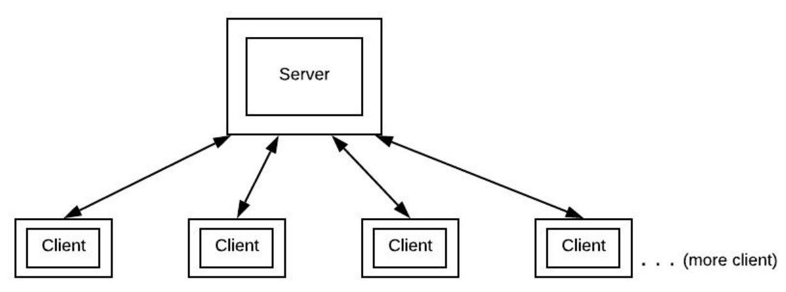
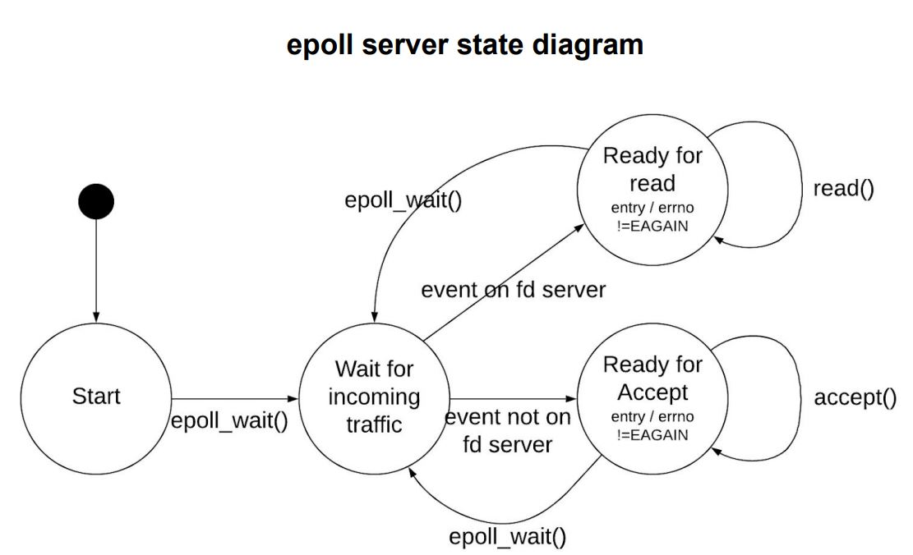
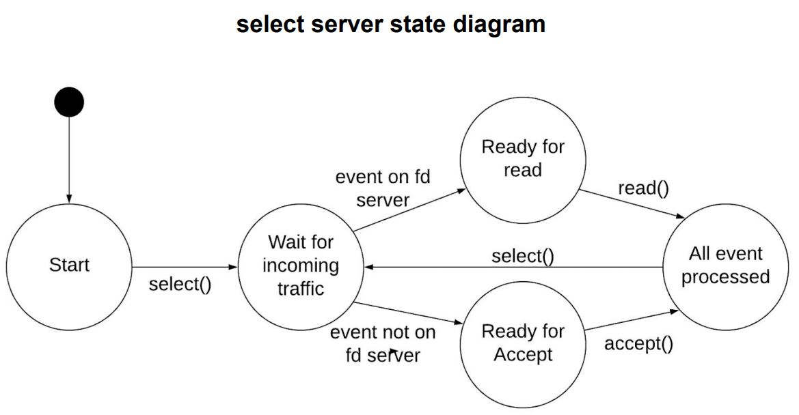
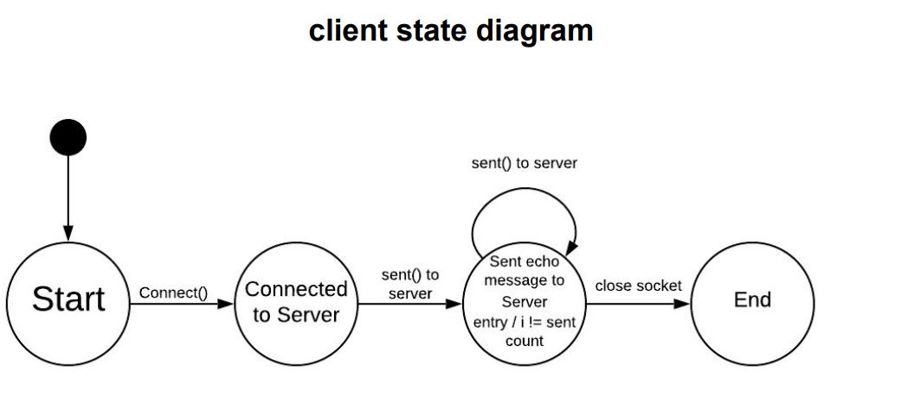
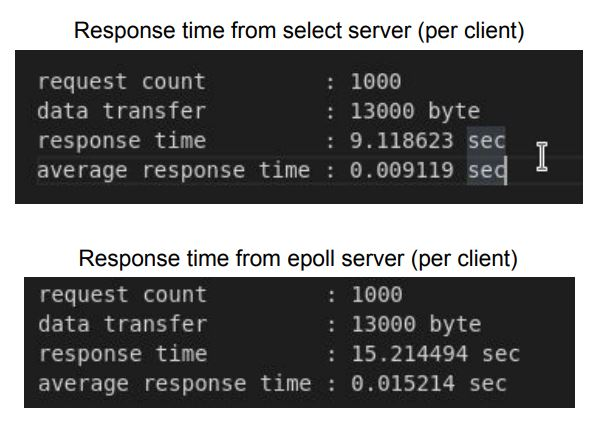
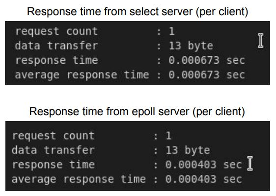

Objective
To compare the scalability and performance of the select and epoll-based client server implementations.
Approach
The client server implementation will be a simple echo-reply server. The main functionality of the client is to send the server with a message, and read the reply from the server, the process will continue several times. As for the servers, the main functionality is to process the client's echo request and reply back with the same echo message. Two versions of server are implemented - an epoll version and a select version. Both versions will have similar architecture in terms of implementation.
Each client will also maintain a record of how many requests it made to the server, the amount of data sent to the server, and the amount of time it took for the server to respond. The server will maintain a list of all connected clients (host names) and store the list together with the number of requests generated by each client and the amount of data transferred to each client.
The figure below shows an overview of the workflow
Source code
The project source code can be found here .
State Diagram
  Usage
Name
client.c
Option
-h (--host) hostname
-p (--port) server listening port
-m (--message) echo message
-c (--count) number of echo request to send
-d (--delay) delay between request (nsec, max 1 sec)
Name
server.c (select)
Option
-p (--p) listening port
Name
server.c (epoll)
Option
-p (--port) listening port
-m (--max-core) number of worker thread to scale accept
How to run
Client
On the client machine, cd to the “client” folder. Fill in the server info in the Makefile, and run
$ make all
If the server is running, the client should display some results in console.
Server (select)
On the server machine, cd to the “select” folder, Fill the value for the macro “PORT” in the Makefile, and run
$ make all
The console should display message indicating server is running
Server (epoll)
On the server machine, cd to the “epoll” folder, Fill the value for the macro “PORT” and “MAX_CORES” in the Makefile, and run
$ make all
The console should display message indicating server is running
Testing
The idea is to keep adding workload to the server until the server shows a significant degradation in performance. We will increase the workload by adding more clients, more sent requests and bigger echo messages. At the end of the testing (both epoll and select server), the result of each of the test cases will be grouped together,and plotted into a line graph.
The Makefiles in each of the “select” and “epoll” folder contains both test scripts test-a and test-b.
Test Script
test-a
Spawns a fixed number of clients per interval for a fixed number of times. The client spawn from this test will send string data to the server periodically.
test-b
Keep on adding clients per interval indefinitely. The client spawn from this test will send string data to the server periodically.
The command for running the test is $make test-a and $make test-b
Case 1
In this case, we try to determine the maximum active socket the server can handle in one session. We use the test-b test script to keep adding clients indefinitely until there’s a significant degradation in performance on the server side. Each spawn client will send an echo request to the server and wait for a reply, this process will continue for enough time until the performance on server side drop.
Testing params
- 20000 echo request (10000 each on two client machines)
- 10000 nsec delay in between each echo request (not including the response time from previous request)
- 0.002 sec client spawn delay
Monitoring tool : Wireshark
select server statistic
The hard limit for the select() server is 1024, so we will not test it. The number is confirmed by looking at the source code for the FD_SET type, which consists of an integer list of size 32. (one bit represents one socket, i.e there's 32*16 =
1024
socket max)
epoll server statistic
Case 2
In this case, we are testing the server performance when requests are sent infrequently during an active connection. We use test-a to spawn a fixed number of clients, and keep all the connections active for around 3 minutes.
Testing params
- 6 spawn cycle, 256 spawn per cycle = 1024 clients in total
- 0.02 sec client spawn delay
- 100000 request per client (will not process all if 3 minutes hit)
- 10 msec delay between each request (not including response time from previous request)
Monitoring tool : Wireshark
Results
Case 3
In this case, we are testing the server performance when requests are sent frequently during an active connection. We use test-a to spawn a fixed number of clients, and keep all the connections active for around 10 sec.
Testing params
- 1 spawn cycle, 256 spawn per cycle = 256 clients in total
- 0.02 sec client spawn delay
- 100000 request per client (will not process all if 3 minutes hit)
- 0.1 msec delay between each request (not including response time from previous request)
Monitoring tool : Wireshark
Results
Case 4
In this case, we are testing the server response performance when there's short live, intense traffic coming in. We use test-b to spawn clients indefinitely. Each client will keep the connection alive until they receive all pending replies from the server.
Testing params
- Keep spawning clients until 300 spawn
- 0.01 sec client spawn delay
- 1 request per client
- 1 msec delay between each request (not including response time from previous request)
Monitoring tool : response time record kept on client side

Case 5
In this case, we are testing the server response performance when there's short live, intense traffic coming in. We use test-b to spawn clients indefinitely. Each client will keep the connection alive until they receive one reply from the server.
Testing params
- Keep spawning clients until 300 spawn
- 0.01 sec client spawn delay
- 1000 request per client
- 1 msec delay between each request (not including response time from previous request)
Monitoring tool : response time record kept on client side
Analysis
Case 1
The hard limit on the select server is 1024 active sockets in one session. As for the epoll server, according to the wireshark conversation, we recorded a total of roughly 20000 active socket connections in one session. We could have kept the test longer, and the number will go higher. However, the wireshark IO graph on the epoll server shows that the number of incoming packets dropped when the active socket count hits 20000 mark. The drop happened because the server was not able to reply back to the client as quickly as before, i.e the response time increased. The client will only send one request when the previous request is answered.
Case 2
The condition we made for this case is that data is sent infrequently while the connection is alive. The IO graph on select server shows an average of 6500 packets/s. As for the epoll server, the IO graph shows an average of roughly 6000 packets/s. One thing to note is that the incoming requests for the select server are comparably consistent than the epoll server. This indicates that the selected server has a fairly consistent response rate. The epoll server has a more inconsistent response rate
Case 3
The condition we made for this case is that data is sent more frequently than case 2, while the connection is alive. The IO graph on select server shows an average of 115000 packets/s. As for the epoll server, the IO graph shows an average of roughly 109000 packets/s. As we can see, the performance gap between select and epoll close in as the frequency of request increases.
Case 4
The condition we made for this case is that connections are short live. The response time for the select server is roughly 9 sec in total (average of 0.009 sec per request), the epoll is roughly 15 sec (average of 0.015 sec per request). We will compare this data with the result
Case 5
The condition we made for this case is the same as case 4, except that this time the client will close the connection after receiving one only (even more short live than connections in case 4). The result shows that the response time for the select server is roughly 0.673 millisecond, the epoll server has a response time of roughly 0.403 millisecond. This time the epoll server seems to have a better performance than the select server.
Explain
The select server uses level trigger, while the epoll server uses edge trigger. The main difference is the event trigger mechanism. Level trigger will keep on notifying the event status on a socket as long as the status is readable (this could occur anywhere in the allocated time splice). Edge triggers will only notify once when the status on a socket changes (only occur during the beginning of time splice).
So does that mean epoll is more efficient than select? The test result in test case 2, 3 and 4 says otherwise. The results show that the select server has an overall higher response rate than the epoll server. This is because, each time, if there’s data from a client ready for ready, the select server will loop through all existing clients to see if there's data available. So if a data comes in from another client while the select server is looping through the list, there’s a good chance it will read it as well. In the case of an epoll server, it will only read on the socket that is ready for read, and that socket only.
The epoll server has some advantages over the select server as well. In case 1, it's evident to say that epoll can monitor why more sockets than select server. The result shows that select could monitor up to 1024 only, while the epoll can monitor 20000 sockets or more. Moreover, In case 5, the result shows that the epoll server has roughly 60% higher response rate than the select server. This happens because of the edge trigger implementation. To run edge trigger, the socket would have to be unblocking. If there’s a new connection request, the kernel will notify the server program (assuming the epoll_wait was called prior to the new connection). The behavior of epoll_wait requires the program to accept new connections until there’s no new connection in the queue list. If a new connection comes in while the server is accepting a connection, it will pick up the new connection as well. This explains why the epoll server has better performance than select server in case 5.
Conclusion
Epoll is useful when implementing a server that deals with massive number of short live connections in a short period of time. This is because the server prioritizes accepting new connections.
Select is useful when implementing a server that handles moderate amounts, long live connection with frequent request. This is because the server prioritizes reading datas from the client.
This conclusion is made based on the fact that either version of server scale out the read or accept operation. It will be difficult to implement scalability in select server because of the level trigger mechanism (wakes up all blocking select calls). This is not the case for epoll because of the default behavior of edge trigger (only wake up one blocking epoll_wait call). So if the epoll scale out the blocking operation, it is possible that the epoll server will yield better performance than select server on all aspects.